The Challenge
As The Ode to grew it became increasingly important to expand the overall experience of their website. With products that keep on growing the display of the design and navigation was utmost important as well as
enhancing the performance of the site.
The initial outcome was to improve and redesign the navigation system and FAQ, apply new features and improve old ones that would fit the current feel and design, build a content interface for their digital exhibition's
and boost the site's SEO.
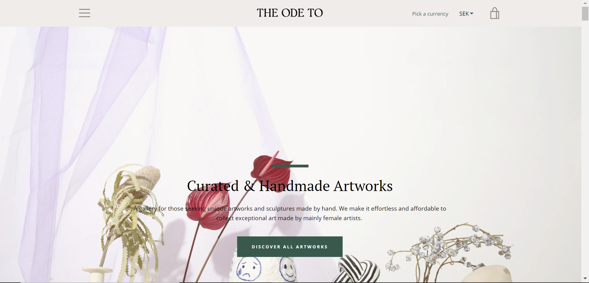
The old start page, desktop version
Project Goals
The Navigation & Product Filtering
The most prioritized goal with this project was to make the navigation system more user friendly and make the potential buyer have a pleasant and smooth journey during their visit at the site no matter the device.
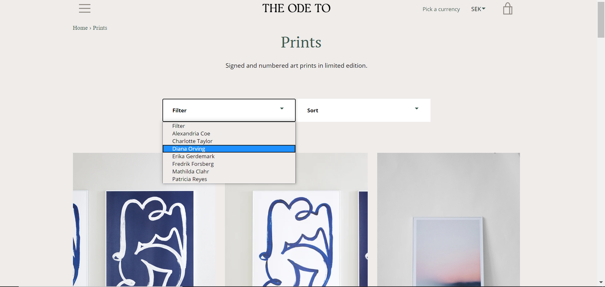
The old product filtering
The FAQ
The current state of the FAQ raised a lot of questions and was just a long list with unstructured information. I aimed to make it easier to locate the right information for the user when they visited the page without being overwhelmed with text.
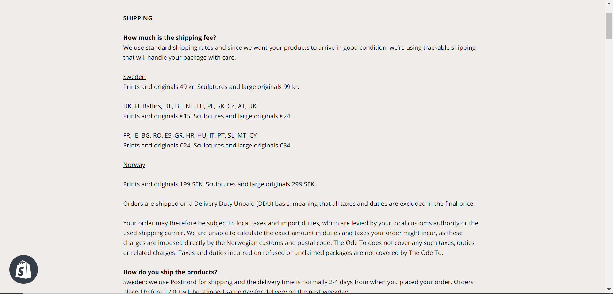
The old FAQ page
Improved and new features
It was suggested that if I had enough time I would look into implementing new features in the product pages that would bring in more user interest. We decided that I would also look into testing and improving old features on the site.
Content Interface
The Company's CEO had personally requested that the site would have a content interface for their upcoming digital exhibitions and it was my responsibility to design and build one they could use and re-use in the future that would fit with the overall design of the website and company brand.
SEO
With the large quantity of products, images, content and old plug-ins there was no surprise that the site speed was quite slow and the first indication that the SEO had to be improved. The goal was to identify what exactly slowed down the site performance, make it more accessible and perform better on Google.
Process
I started the project with creating a UX Project Plan that worked as my blueprint throughout the project and helped me when I wanted to share insights with the PO.
I proceeded with conducting a stakeholder interview with the CEO of the site to find out more about their goals, current information and that we shared the common understanding of what the project was going to present. I find this part to be one of the most ignored but important steps in a UX design process. You have to understand the company behind the product and have a shared understanding from the start.
“UX Designers need to satisfy all their project stakeholders, not just the end-users.”
I followed the classic Design Thinking Process throughout the project with an emphasis on the first three steps: empathize, define, ideate. The collection of data and research was the most time consuming and biggest part of my project. All my findings were documented thoroughly in UX Reports that I presented during Sprints to the PO.
My research methods consisted of competitive research, UX Reviews, data analysis and SEO reports (I frequently used Lighthouse, Happy Orange heat mapping, Shopify Store Analytics and Google Analytics). I combined my contextual interviews of frequent and new users with usability tests of the current site and the implements that occurred during the project to prove or disprove my assumptions.
When I had gathered and documented all my research data I visualized it for the PO with both Empathy mappings and with User Flow Charts as well as a brief presentation and prototypes. This occurred in iterations throughout the project and all steps weren't always present before we started the implementation due to deadlines.
The Result
The Navigation & Product Filtering
During my competitive research I found out that the common practice of navigation menus and refinding products was to have more structure, especially in the form of a mega menu and separate the elements in attributes when it came to the products. I proposed a very simple solution by selecting a menu and a product filter feature that fulfilled my stakeholders wishes and met their requirements of an easier navigation. I tested my theory by conducting user tests followed up by interviews. The company approved and we implemented both the mega menu and the filtering on the product pages.
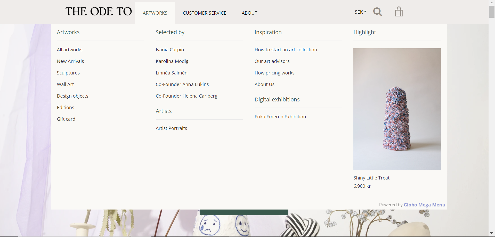
The mega menu, currently at the website (desktop version)
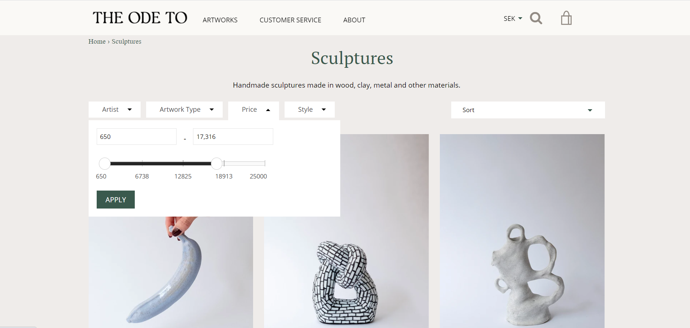
The current product filtering feature (desktop version)
The FAQ
After conducting my research and especially after holding the interviews and usability testing my assumptions about the not so structured FAQ page was confirmed by the users. They wanted an easier way to find specific answers to their questions and the current FAQ didn’t fulfill that. I built, tested and suggested my own version of the FAQ page that later was fully implemented on the site.
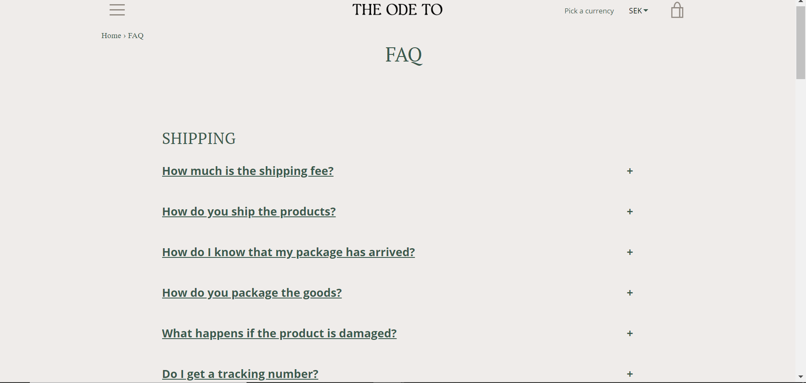
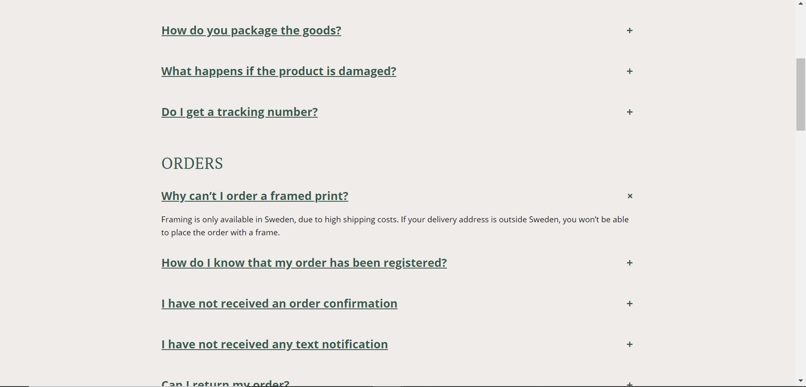
The new accordion FAQ opened and collapsed
New and improved features
I stood by the concept of “less is more” when it came to implementing new features and I instead tried to focus on improving the ones that were already there and develop new ones that would compliment the old features. The two biggest new features that complimented the product pages was when I applied the Pinterest needle to all products to draw in more interest to the product and the zoom in feature to enhance the discovery experience for the user.
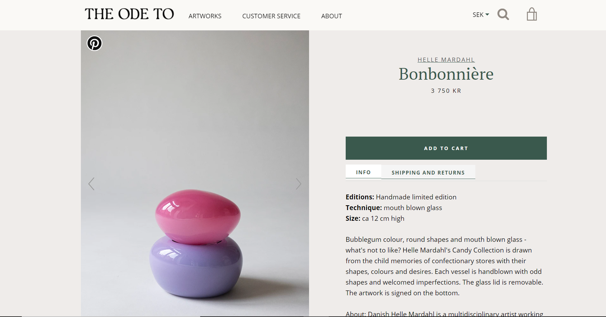
The Pinterest needle in the default top left corner (Desktop version)
Zoom in features on click and hover (Desktop version)
During my UX Review, common practice and research it was obvious that the information on the product pages wasn’t quite clear enough. I improved the sold out text, made it clearer and changed the color of the sold out button from a button exactly the same as the buy button to the standard unclickable grey.
Sold out text and sold out button (Mobile Version)
Content interface
I had a tremendous amount of fun bringing the content interface for the new digital exhibition site to life. The CEO agreed that it fit with the overall design of the website and company brand and I took all their requests in great consideration. Here is the current one.
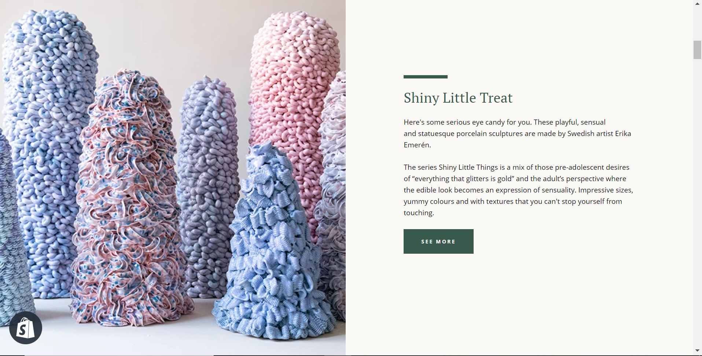
The front page of one of the digital exhibitions (desktop version, admin view)
404 page
During the Usability testing, UX Review and heat mapping of the site both me and the users noticed the default 404 page, it was also the place many users ended their session. I did a quick prototype and suggested making it more inviting for the user to reduce the exit point when landing on the 404 page.
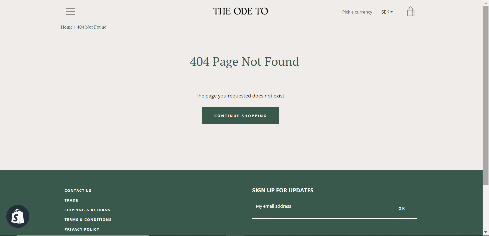
The default 404 page
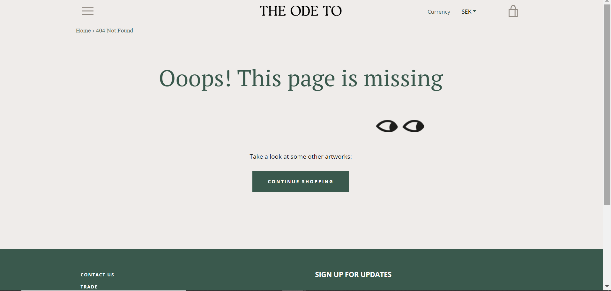
A quick update of the 404 page (Desktop Version)
Insights
Estimation of time
Projects are time consuming and I really wanted to present some steps in my work more thoroughly. Due to deadlines I didn’t manage to present the empathy mapping, user flow charts and prototyping as clear as I intended.
The Importance of data
I learned so much from diving deep into the SEO reports, heat mappings, Lighthouse and Google Analytics that I with great confidence could refer to clear data when I presented my findings and suggested improvements.
Daily communication is key
To avoid misunderstandings I had daily check-ins with the PO. I am certain that this approach was one of the most important things during the project and made the work so much smoother.
Document everything
Documentation and structure made it more sufficient for me to sort out all the information I gathered. I divided my workload between documents and consistently worked on the UX Report so I wouldn’t forget any important details.
UX Project Plan
I had never heard about a UX project plan before this project but it helped me tremendously. It worked as my navigation and I kept going back to it when I felt uncertain what to do next.
Research matrix
When you do substantial research I highly recommend you start with creating a competitive analysis matrix together with a new document where you can scribble down your notes and findings that don’t fit in the spreadsheet matrix. This makes it much easier to keep as a reference while conducting your research and helps you summarize your findings later.
Not including all the users (accessibility)
I always strive to be more including, especially since the new commission of WCAG was released. This isn’t always prioritized but should always be valued higher in all projects.